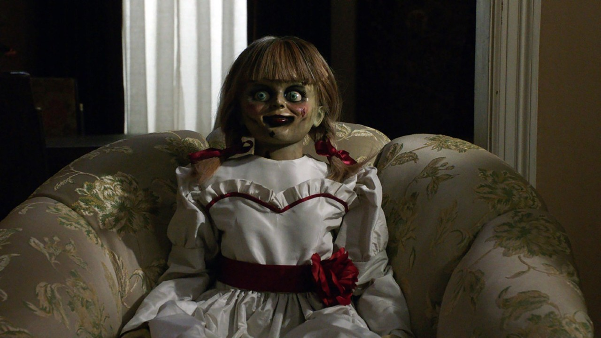
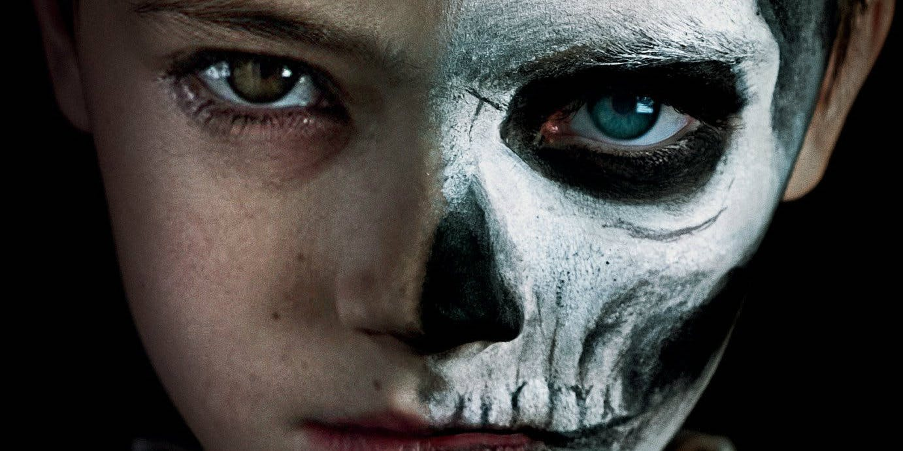
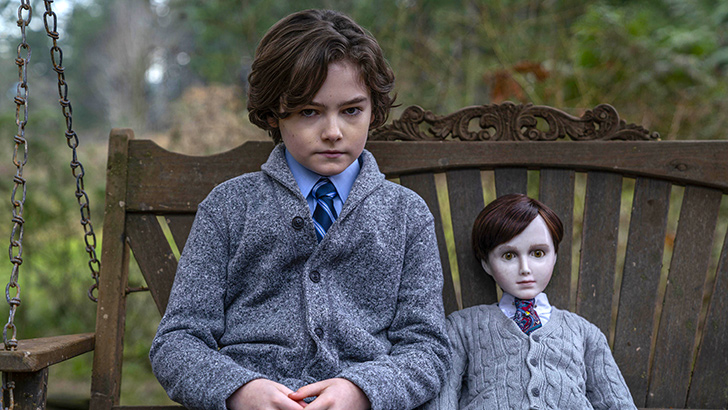
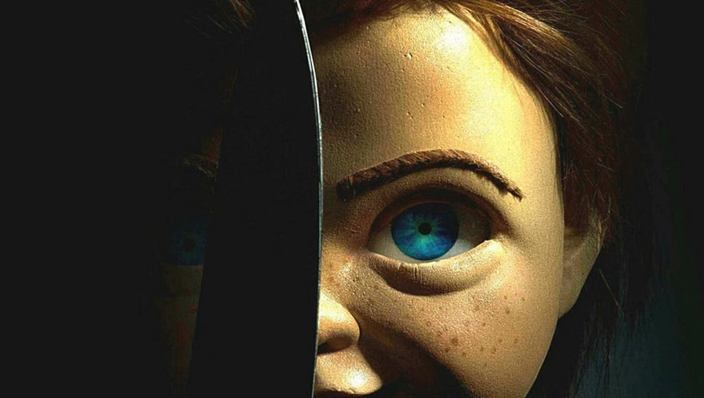
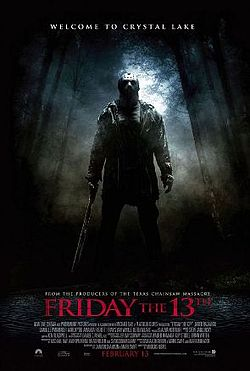
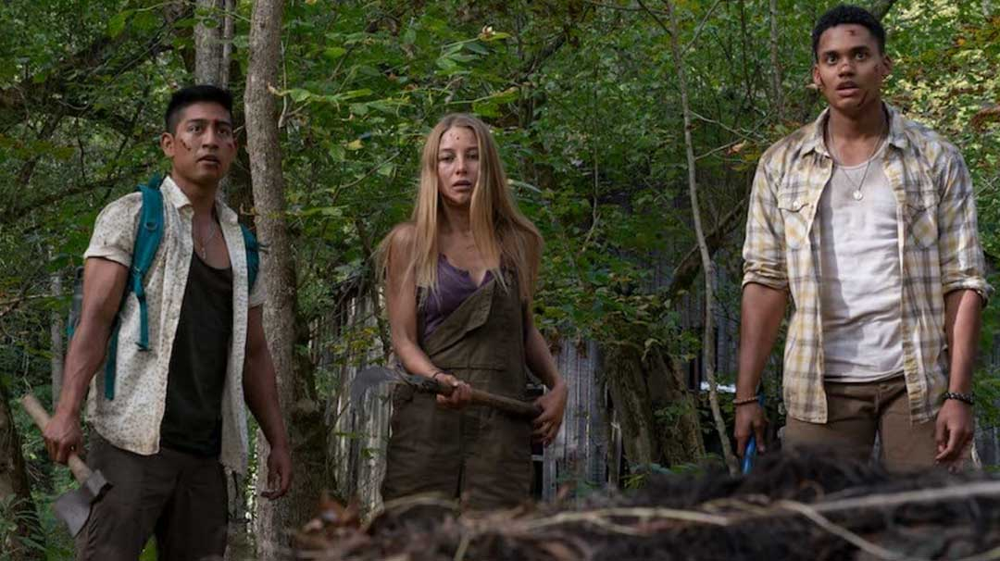
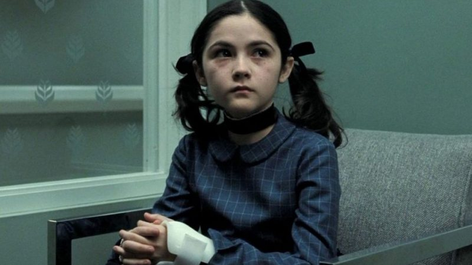
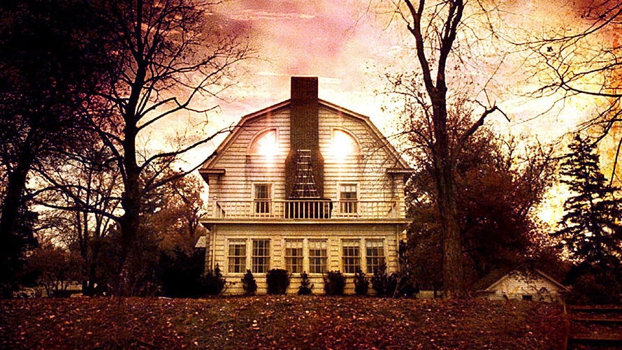
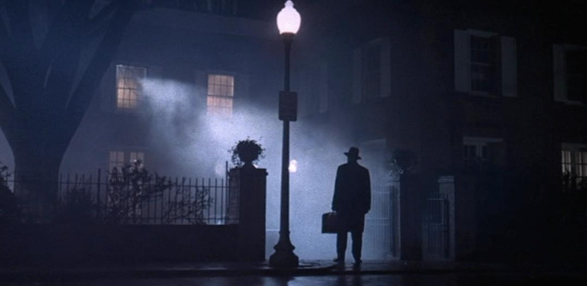

Filmes.

Sinopse: Anos após a trágica morte de sua filha, um habilidoso artesão de bonecas e sua esposa decidem, por caridade, acolher em sua casa uma freira e dezenas de meninas desalojadas de um orfanato. Atormentado pelas lembranças traumáticas, o casal ainda precisa lidar com um amendrontador demônio do passado: Annabelle, criação do artesão.
Estrelando:Stephanie Sigman como Irmã Charlotte. Talitha Bateman como Janice / Annabelle Higgins. Lulu Wilson como Linda.
Diretor:David F. Sandberg

Sinopse: Madison começa a ter sonhos aterrorizantes de pessoas sendo brutalmente assassinadas e acaba descobrindo que, na verdade, são visões dos crimes enquanto acontecem. Aos poucos, ela percebe que esses assassinatos estão conectados a uma entidade do seu passado chamada Gabriel e, para impedir a criatura, Madison precisa investigar de onde ela surgiu e enfrentar seus traumas de infância.
Elenco : Annabelle Wallis, George Young, Jean Louisa Kelly, Maddie Hasson, Michole Briana White, Susanna Thompson
Direção : Akela Cooper / Ingrid Bisu / James Wan

Sinopse: Jovem família se muda para uma mansão sem conhecer a terrível história por trás de suas paredes. Lá, o filho faz um novo amigo: um boneco em forma de humano que ele chama de Brahms.
Elenco: Katie Holmes, Christopher Convery, Owain Yeoman
Direção: William Brent Bell

Sinopse:Andy (Gabriel Bateman) e sua mãe se mudam para uma nova cidade em busca de um recomeço. Preocupada com o desinteresse do filho em fazer novos amigos, Karen (Aubrey Plaza) decide dar a ele de presente de aniversário um boneco tecnológico que, além de ser o companheiro ideal para crianças e propor diversas atividades lúdicas, executa funções da casa sob comandos de voz. Os problemas começam a surgir quando o boneco Chuck se torna extremamente possessivo em relação a Andy e está disposto a fazer qualquer coisa para afastar o garoto das pessoas que o amam.
Elenco : Aubrey Plaza, Mark Hamill, Brian Tyree Henry
Direção :Lars Klevberg

Sinopse:A história do homicído em Crystal Lake não impede que os instrutores montem um acampamento de verão no bosque. Moradores supersticiosos advertem sobre o ocorrido, mas os jovens Jack, Alice, Bill, Marcie e Ned, prestam pouca atenção aos mais velhos e acabam sendo perseguidos por um assassino brutal. A medida em que são esquartejados, baleados e esfaqueados, os instrutores lutam para manterem-se vivos contra um adversário implacável.
Elenco:Adrienne King ,Kevin Bacon
Diretor: Sean S. Cunningham

Sinopse:Jen e os amigos partem em uma caminhada pelas trilhas na região dos Apalaches. Quando se desviam do caminho, eles se deparam com uma misteriosa e macabra comunidade isolada.
Elenco: Charlotte Vega, Emma Dumont, Matthew Modine, Daisy Head, Bill Sage, Valerie Jane Parker, Tim DeZarn, Dylan McTee, Adain Bradle
Direção: Mike P. Nelson.

Sinopse:Uma série de eventos alarmantes faz com que uma mulher acredite que algum mal esteja por trás do rosto angelical da filha de nove anos, recentemente adotada.
Elenco :Vera Farmiga,Isabelle Fuhrman,Peter Sarsgaard,Aryana Engineer, Jimmy Bennett, CCH Pounder
Diretor: Jaume Collet-Serra

Sinopse:13 de novembro de 1974 a polícia do condado de Sufolk recebeu uma chamada telefônica que a levou ao endereço 112 Ocean Avenue, Amityville, Long Island. Dentro da casa a polícia encontrou um crime brutal: o assassinato de uma família inteira enquanto dormia. Poucos dias depois, Ronald Defeo Jr. (Brendan Donaldson) admitiu que usou um rifle para matar os pais e seus 4 irmãos, alegando ter ouvido vozes que vinham de dentro da casa e que o influenciaram a cometer os crimes. Um ano depois George (Ryan Reynolds) e Kathy (Melissa George) se mudam com os filhos para a antiga casa dos Defeo. Não demora muito para que estranhos eventos comecem a acontecer, afetando a vida da família e indicando que uma presença maligna está oculta na casa.
Elenco : Ryan Reynolds, Melissa George, Jesse James
Diretor : Andrew Douglas

Sinopse:Uma atriz vai gradativamente tomando consciência de que a sua filha de doze anos está tendo um comportamento completamente assustador. Deste modo, ela pede ajuda a um padre, que também é um psiquiatra, e este chega a conclusão de que a garota está possuída pelo demônio. Ele solicita então a ajuda de um segundo sacerdote, especialista em exorcismo, para tentar livrar a menina desta terrível possessão.
Elenco: Ellen Burstyn, Max von Sydow, Lee J. Cobb, Kitty Winn, Jack MacGowran, Jason Miller, Linda Blair
Diretor: William Friedkin

Sinopse:Jack Torrance se torna caseiro de inverno do isolado Hotel Overlook, nas montanhas do Colorado, na esperança de curar seu bloqueio de escritor. Ele se instala com a esposa Wendy e o filho Danny, que é atormentando por premonições. Jack não consegue escrever e as visões de Danny se tornam mais perturbadoras. O escritor descobre os segredos sombrios do hotel e começa a se transformar em um maníaco homicida, aterrorizando sua família.
Elenco: Jack Nicholson, Shelley Duvall, Danny Lloyd, Scatman Crothers
Direção: Stanley Kubrick